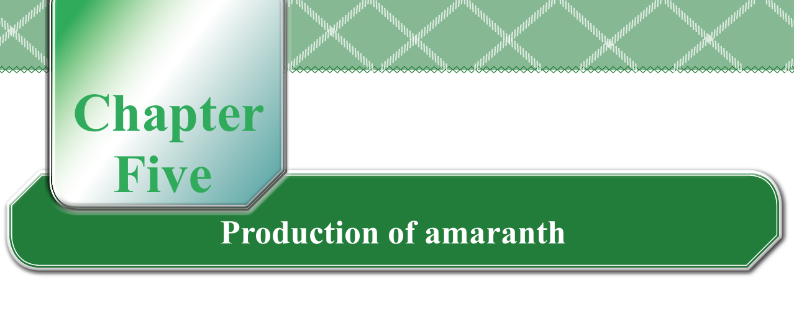
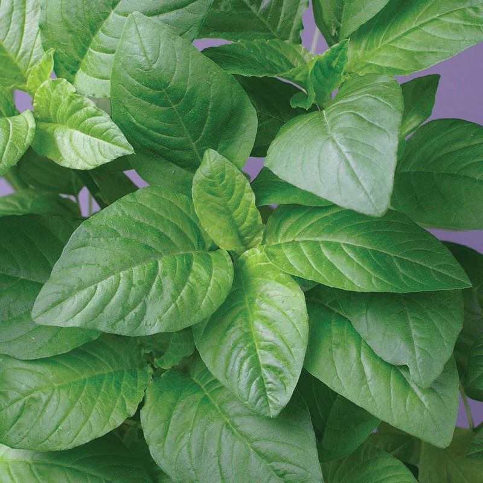
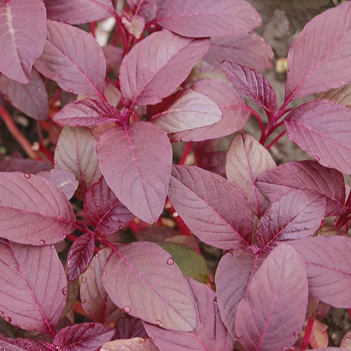

Chapter Five
Production of amaranth
Getting started with amaranth production
Amaranth is a fast-growing vegetable crop that can be grown all year round in Tanzania. It can be grown for its leaves or seeds. It is an easy crop to grow with very quick returns, and has few simple requirements. Amaranth is rich in vitamins A, B, C, and minerals such as calcium and iron. Some amaranth grains are also high in protein. You can eat amaranth alone or mix it with other vegetables. Amaranth can grow in many different soil and weather conditions. It is also a good way for farmers to earn money by selling its leaves or grains. Figures 5.1 and 5.2 show leafy and grain amaranth, respectively.

